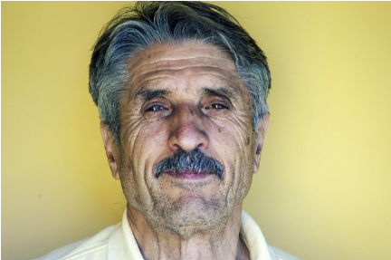

Dona Maria - 72 anos
Ajuda com celular
Dona Maria precisa de ajuda para aprender a usar aplicativos de mensagens

Encontre oportunidades para fazer a diferença hoje.
Dona Maria precisa de ajuda para aprender a usar aplicativos de mensagens

Dona clara gostaria de conversar sobre livros e jardinagem

Seu Antônio precisa de ajuda para acompanhamento médico

Seu Carlos precisa de ajuda para recuperar a senha do GOV
Dona Maria - 72 anos
Hoje - 14h às 16h - Santana, São Paulo - SP
Dona Maria
72 anos